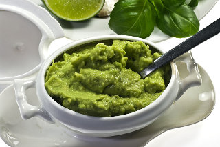

Guacamole Recipe
Makes enough for a small party.

Ingredients
4 ripe avocados
5 cloves garlic, minced
125 mL can jalapeño peppers, minced
1 tbsp lime juice
1 tsp salt
1/2 tsp pepper
Instructions
This recipe is actually very easy…
Scoop out the flesh of the avocados into a bowl.
Combine all of the other ingredients in the bowl.
Mash with a potato masher until the desired consistency is reached.